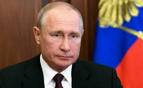

Аннотация
Россия, страна богатая историей и культурным наследием, представляет собой уникальный мозаичный образец современного мира. С ее просторами, охватывающими два континента, Россия является крупнейшей страной в мире. От прекрасных прибрежных линий Балтийского моря до бескрайних степей Сибири и горных хребтов Кавказа, эта страна впечатляет своим разнообразием природы. Богатство ее культурного наследия отражается в искусстве, архитектуре и литературе, прославляющих богатство русской души.
Политически и экономически влиятельная, Россия играет ключевую роль в мировых делах. Ее история, начиная с древних времен и заканчивая современностью, пропитана событиями, которые оставили неизгладимый след в мировой истории. В стране процветают наука, технологии и исследования, способствуя инновациям и развитию в различных областях.
Однако, Россия - это не только история и достижения, но и стремление к будущему. Ее народы, обладая уникальными культурными традициями, продолжают вносить свой вклад в мировое сообщество, подчеркивая важность сотрудничества и взаимопонимания в наше глобализированное время.